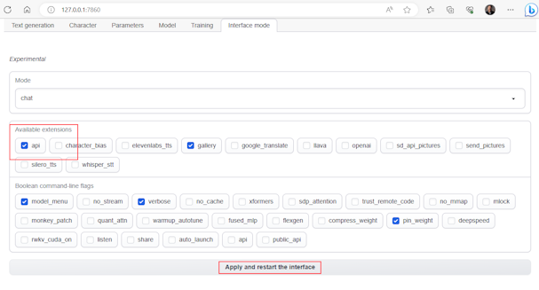
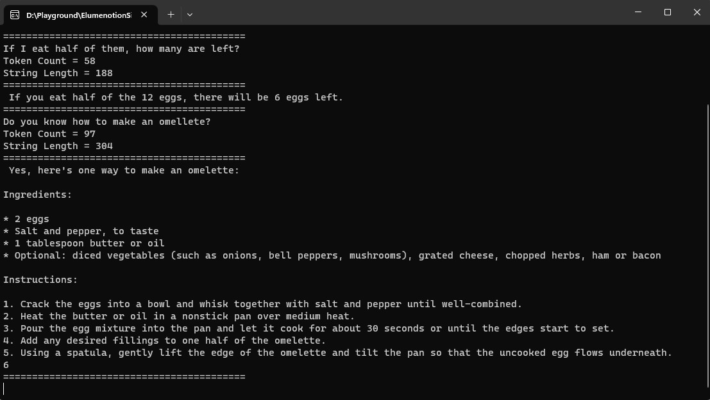
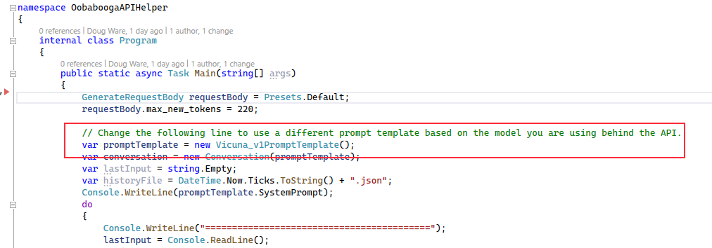

OobaboogaAPIHelper
OobaboogaAPIHelper is a .NET library available on nuget.org. This class library makes it easy to consume the Oobabooga Text Generation Web UI’s API extension. Key features include: prompt templates for Vicuna 1,0, 1.1, Dolly v2, and basic LLama with a base class that is easy to extend, converstaion helpers to easily convert saved converstaions created with one model and/or prompt template for use with other models, model parameters and presets, and token counting to make it easy to fit your model's context size limits.
Why?
Converting the python in Oobabooga Text Generation Web UI to C# was a good way for me to learn what happens in the Web UI Gradio app under the covers. The library contains:
- Each of the Web UI presets (at the time of this writing)
- Models for generating requests with documentation of each property
- Methods for /api/v1/generate and /api/v1/token-count
- Prompt templates for Vicuna, Dolly, and Llama models and a base class that is easy to use and extend for your own prompt templates
- Conversation helpers that make it easy to save and reuse conversations including token counts with different prompt templates
Source, sample console app and unit tests are in github
Classes and methods are documented here
Console Sample
First start Text Generation Web UI and enable the api extension.

Make sure you can chat in the browser and that the api extension is loaded. The console sample will work with minimal effort.

But, you do need to make sure you **set the promptTemplate to match the model you have loaded in Web UI**!
